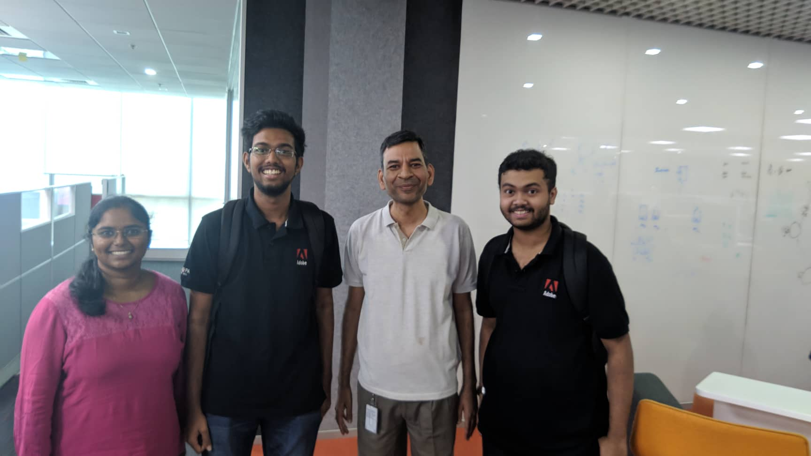
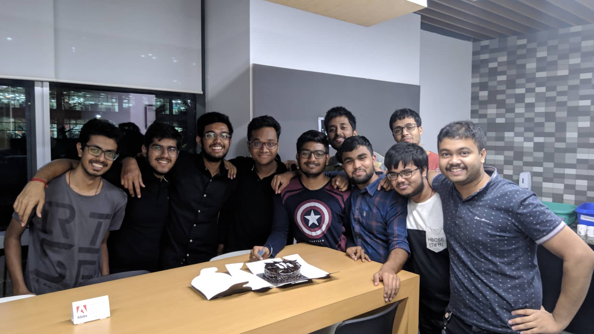

August 16, 2019
Abhishek Datta, an undergraduate student in
the Department of Electrical Engineering from the Y16 batch,
recounts his enlightening experience of securing an internship
through SPO and his enriching life during his internship. He
interned at Adobe, Bangalore in the Summers’19.
Adobe Inc. is an American multinational computer software
company. It has historically focused upon the creation of
multimedia and creativity software products, with a more
recent foray towards digital marketing software. Adobe is
best known for its Adobe Flash web software ecosystem,
Photoshop image editing software, Adobe Illustrator vector
graphics editor, Acrobat Reader, the Portable Document
Format (PDF), and Adobe Creative Suite, as well as its
successor Adobe Creative Cloud.

Last year during this time, I was sitting in my room and
wondering if I’ll secure a software internship in one of the
reputed companies or not. I had heard that most of these
“reputed” companies come in the first week itself, and I
hadn’t secured an internship yet at the end of it. I could see
those getting selected celebrating, and facebook getting
filled with congratulatory posts. This is a moment, when the
sense of desperation kicks in for the first time, which a lot
of you might face and you start getting serious (hopefully).
One of the mistakes I did was that I wasted my summer vacation
not doing any preparations, something that I would strictly
advise against. It is a golden time, when you don’t have the
pressure and lots of time to learn and master new things. As a
result, when the semester started, and it was already late, I
started preparing in whatever time I had. I was not very sure
about my software skills, so I also decided to apply to the
core EE companies as well. I had also decided to try for some
research intern through one of the academic programs, as a
backup. So I had filled the “Academic Intern” preference in
SPO - which gives me the right to choose an academic intern
secured separately over an industry intern secured through
SPO.
 With these in mind, I started practising coding from CodeChef,
LeetCode and GeeksForGeeks. I revised all the algorithms that
I learnt in ESO207 - Data Structures and Algorithms. I started
focusing on the interview questions for different companies
from GeeksForGeeks. I also did the weekly coding contests in
LeetCode (which I suggest people to start from the summer
vacation), which had questions that were well designed for
recruitment tests. I also revised some of my EE courses for
some EE profiles that I had thought of applying to.
With these in mind, I started practising coding from CodeChef,
LeetCode and GeeksForGeeks. I revised all the algorithms that
I learnt in ESO207 - Data Structures and Algorithms. I started
focusing on the interview questions for different companies
from GeeksForGeeks. I also did the weekly coding contests in
LeetCode (which I suggest people to start from the summer
vacation), which had questions that were well designed for
recruitment tests. I also revised some of my EE courses for
some EE profiles that I had thought of applying to.
Trying to do all of this was already difficult in the short
time, and now there was the added pressure of not having
secured an intern after the first week. It was the second
week, and I had given the test rounds for Samsung Bangalore
and Adobe India, whose results were yet to come. Both had come
for a Research Intern profile, and I thought it would be a
good experience of both research and corporate life, so I
applied in them. I had read in similar articles (like this)
from seniors that they got selected in Adobe just on the basis
of their 9.5+ CPI. But, I didn’t have such an outstanding CPI,
so I had to go through the test round first. Nevertheless, I
had less expectation from Adobe, and was looking forward to an
interview call from Samsung.
The reverse happened. I got a call on the following Sunday
morning, that I have an interview scheduled for Adobe at
around 10 am. I rushed, had breakfast and got dressed up in
formals. Reaching the place in a hurry, I was told that the
interview has been postponed to 12pm, and it was going to be
an over-the-phone interview. I wondered why I had rushed to
dressed up so formally! 😛
So finally, at 12:05 pm, I got a call from an interviewer from
Adobe. Starting with some introductions, he told me to go
through my resume. I had nothing overly stated in my resume,
so I confidently went through whatever little there was that I
had done. Then he sent me a link to a Google Doc, and told me
to type answers to the questions that he was going to ask. He
asked me 3 questions. The first was a question that checked my
object oriented skills. I was told to make a class that
represents a probability distribution, which would contain
methods for calculating mean, median, expectations and some
others functions. Initially I had some confusion, but
eventually I was able to come up with a solution that the
interviewer seemed to be satisfied with. In his second
question, he asked me to write an algorithm for finding the
median, or in general, any kth ranked element from a
constantly updating list. I had come up with a modified
version of quicksort that finds the kth element instead. The
interviewer seemed to be satisfied with the answer, but later
I realised the best solution was using two heaps. The third
question was from Linear Algebra and included some eigenvalues
and other stuff that I didn’t remember well from MTH102. I
tried for about 2 mins, but then was honest about it and told
him that I didn’t remember it. Then he ended the interview by
stating that it was all he had to ask and it was a good time
interviewing me.

“It didn’t go well!” - that was my impression of the
interview. I didn’t give the most optimal solution for the
second question, and I couldn’t answer the third question at
all. I consoled myself with the thought that I was anyway not
expecting a selection to Adobe, and tried to focus on what was
ahead. It was evening, and I tried to open the Internship
portal, only to find that I couldn’t login anymore. Initially
worried what was wrong, I quickly checked my email to find
that I was selected for the summer internship at Adobe! It was
a moment of joy, and suddenly I was on the other side of the
line, where I had been seeing so many people getting to over
the last week. Although relatively short, I would say applying
for internships was a good experience, where I experienced
both the downsides and the upsides of it - enough to write
this article today. 😛
The internship started on May 7th. All the interns were
assigned to the same Big Data Experience Lab of Adobe at
Bangalore. We were provided with flight tickets (both to and
fro) and given a temporary accommodation at a 5 star hotel for
the initial 2 weeks. After that, we had to pay and manage our
own accomodation. On the first day, we had an orientation
where we were made aware of the values and the ways of Adobe.
We were also given a small tour of the 10 floor office
building, where we came to know all the perks and facilities
available to the employees. There was a gym, facilities for
various indoor games like TT, football, carom and pool, a
pantry on every floor for tea/coffee/maggi anytime, and a
cafeteria where you get free lunch and dinner (if you stay
late). There is no strict dress-code at Adobe, nor is there
any strict office hours, as Adobe doesn’t have a concept of
time-in or time-out, but we usually came at around 10am and
left at around 8pm, after having dinner from the cafeteria.
Also, if you come to office on Sundays, you get to order free
food from any nearby restaurants, which was a major attraction
for the interns to work on weekends. 😛
 We were divided into teams of 2-3 interns and 2 mentors each.
The mentors were employees from the lab who had enough
experience and knowledge in the problem area we would be
working on. No team had two interns from the same college, and
even mentors were tried to be assigned such that they were not
alumnis of any of the intern’s colleges. The problem area
given to any team was mostly random, while keeping the
constraint that they were in the domain of our mentors. Most
of the problem areas involved some use of Machine Learning, so
having a little prior experience in the field helps.
We were divided into teams of 2-3 interns and 2 mentors each.
The mentors were employees from the lab who had enough
experience and knowledge in the problem area we would be
working on. No team had two interns from the same college, and
even mentors were tried to be assigned such that they were not
alumnis of any of the intern’s colleges. The problem area
given to any team was mostly random, while keeping the
constraint that they were in the domain of our mentors. Most
of the problem areas involved some use of Machine Learning, so
having a little prior experience in the field helps.
The internship period was nicely structured into two main
phases. The first phase was a problem choosing phase, where we
had to finalize the problem we will be working on, from a vast
problem area that we were given initially. We were required to
read a lot of state of the art papers and come up with unique
ideas. The first month of our two and a half month internship
went in narrowing down to one problem statement that was
really innovative, hard, research worthy and in the domain of
Adobe. Then we defended it in front of all senior members at
Adobe and got it accepted as our problem statement for the
internship.
The second phase was about figuring out a solution approach to
the problem, and then creating/implementing models, coding
different parts and experimenting various hypotheses. We
implemented about 12 different models from various state of
the art papers and created a pipeline of our own, that tried
to solve our chosen problem statement. Finally, we had to
present a demo at a Tech Fair, where the senior members of
Adobe asked questions about our project and we explained the
details of it. The entire experience was enriching, and we
learnt a lot about our research field, as well as about the
process of industrial research in general.

Even though the working durations were slightly hectic, we had
a lot of fun in between. We were taken to treats by our
mentors to one of the costliest hotels in Bangalore, two times
- once after the Problem Defence, and once after our Final
Demo. We also had a trip organised by Adobe for all the
interns. We were taken to a resort in Bangalore, where a lot
of activities were organised, and it was a lot of fun! We also
celebrated the birthday of one of my teammates in the office
itself at midnight with cakes and birthday bombs. Towards the
end, there was a farewell party as well, where some delicious
dishes were present. Besides these, the mentors in general
were very friendly, and even in meetings we would at times
laugh or crack some relevant jokes. New bonds were formed with
our teammates, and even with the other teams in our cubicle.
Overall, it was a very well structured, organised internship
that gave us a lot of insight into industrial research as well
as corporate life in general. I would highly recommend people
to try and come at Adobe, and live this enriching experience
themselves. Added bonus: You’ll most likely get a patent or
paper in one of the prestigious journals out of this
internship, if you give some genuine efforts, which most
interns give here. It is a rare feat that very few industrial
internships will give you.
Best of luck for your endeavours!